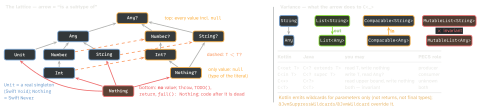

cross-platform · folio
In one line: Every Kotlin type has a nullable twin; the hierarchy is a lattice with
Any? on top and Nothing (no values) at the bottom, so throw,
TODO() and return fit any expected type. Generics are invariant unless
declared out/in at the class (declaration site) or projected at a use; on the
JVM type arguments are erased, so runtime checks see only List<*> — unless an
inline function makes T reified.
Download PDF Print view LaTeX source


Top, bottom, platform
Nothingmakes failure branches type-check:val n: String = x.?:fail("no")emptyList()is anobject EmptyList : List<Nothing>— one instance fits everyList<T>becauseListisout. Same trick:data object Loading : Load<Nothing>.- Default upper bound of
<T>isAny?:fun <T> f(t: T)acceptsnull.<T : Any>forbids it.T & Any= definitely non-nullable (1.7) — e.g. to override Java’s@NotNull T. - Platform type
T!(from un-annotated Java) = “TorT?, you decide”.@Nullable/@NonNull(JSpecify, AndroidX, JetBrains) turn it into a real type. Declare the type explicitly at the boundary.
Smart casts — exactly when
- Stable values only:
vallocals;valproperties that are notopen, have no custom getter and live in the same module;varlocals not changed between check and use (and not captured by a lambda that changes them). Never:varproperties, delegated properties. - K2 (2.0) adds: a check stored in a local (
val isCat = a is Cat),a is B || a is C→ closest common supertype, captured vars insideinlinelambdas, info carried intocatch/finally. - Contracts teach the compiler:
requireNotNull,check,isNullOrEmptysmart-cast after the call;run/letpromisecallsInPlace. Your owncontract {}still needs@OptIn(ExperimentalContracts::class).
Example
fun fail(msg: String): Nothing = throw IllegalStateException(msg)
sealed interface Res<out T> { // out: Res<Nothing> fits
data class Ok<T>(val v: T) : Res<T>
data class Err(val e: Throwable) : Res<Nothing>
}
fun copy(from: Array<out Any>, to: Array<in Any>) { /*..*/ } // use-site
fun <T> max(xs: List<T>): T where T : Comparable<T>, T : Any = xs.max()
fun <T> T.orThrow(): T & Any = this ?: fail("null") // DNN type
inline fun <reified T> Any?.asOrNull(): T? = this as? T
val t = typeOf<List<String>>() // reified: keeps the type ARGUMENT
if (x is List<*>) { } // is List<String> = compile error
@JvmInline value class Email(val raw: String) {
init { require('@' in raw) } // validated, zero-cost when unboxed
}
fun interface Rule { fun ok(s: String): Boolean }
val notBlank = Rule { it.isNotBlank() } // SAM conversionErasure & reified
- JVM keeps only the class:
is List<String>= error,as List<String>= unchecked warning — the CCE fires later, at the first element read. reified(inline only): the call site pastes the real class, sois T,T::class,typeOf<T>()work.T::class.javastill drops arguments (List<User>→List);typeOfkeeps them.- Erased overloads clash (
f(List<String>)/f(List<Int>)) →@JvmName.
Variance in practice
out T:Tonly in out positions (returns,val); escape hatchList.contains(e: @UnsafeVariance E).Array<T>is invariant (mutable), socopy(from: Array<out Any>)takes anArray<String>but cannot write into it.- Star:
Foo<out T : U>→Foo<*>readsU;Foo<in T>→Foo<*>=Foo<in Nothing>: writes nothing.
Sealed, value, alias, SAM
- sealed: direct subclasses in the same module + package;
whenon sealed/enum/Booleanmust be exhaustive (statements too, since 1.7) — skipelseso a new subclass breaks the build. - value class: one
val, unboxed; boxed as nullable, genericT, interface/Any; no===; functions taking one get a mangled JVM name (send-<hash>). - typealias = new name, same type, no safety. fun interface: one abstract method → lambda converts (Java SAMs always did).
Traps
fun <T> f(t: T):tmay be null — the bound isAny?.val s = javaObj.nameinfersString!: NPE at first use, far away.- No smart cast on
open val/other-moduleval— copy to a local. List<Email>of a value class = boxed elements; saving gone.
Remember: Any? top · Nothing bottom · out produces, in
consumes · erased unless reified.